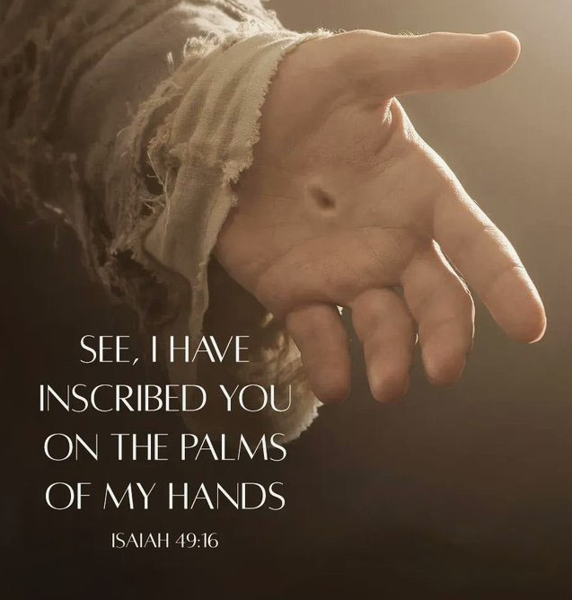

Hope
Eager expectation of future goodness
The people walking in darkness have seen a great light; on those living in the land of deep darkness a
light has dawned. - Isaiah 9:2
- Hope deferred makes the heart sick, but a longing fulfilled is a tree of life. - Proverbs 13:12
-
"Now, then, if you don't believe in God, tell me what your hope is? Make it known in the world and let
everyone evaluate it. What is your hope? To live long? Yes, and then what? To bring up a family? Yes,
and
then what? To see your children comfortably settled in life? Yes, and then what? To reap extreme old age
and
peaceful retirement? Yes, and then what? The curtain falls. Let me lift it. The cemetery. The throne of
God.
Your spirit is sentenced. The trumpet of the resurrection sounds. Final doom. Body and spirit held
forever,
without Christ, you have no better prospect than that. I implore you to open your eyes and see what is
to be
seen. May the Lord have mercy on you and give you a better hope." - Charles Spurgeon.
The prospect of the righteous is joy, but the hopes of the wicked come to nothing.' - Proverbs 10:28 - 'Do not gloat over me, my enemy! Though I have fallen, I will rise. Though I sit in darkness, the Lord will be my light. ' - Micah 7:8
- 'for though the righteous fall seven times, they rise again, but the wicked stumble when calamity strikes. ' - Proverbs 24:16
- For I know the plans I have for you,” declares the Lord , “plans to prosper you and not to harm you, plans to give you hope and a future. - Jeremiah 29:11
-
'But Zion said, “The Lord has forsaken me, the Lord has forgotten me.” “Can a mother forget the baby at
her breast and have no compassion on the child she has borne? Though she may forget, I will not forget
you! See, I have engraved you on the palms of my hands... ' - Isaiah 49:14-16

- Praise be to the God and Father of our Lord Jesus Christ! In his great mercy he has given us new birth into a living hope through the resurrection of Jesus Christ from the dead, and into an inheritance that can never perish, spoil or fade. This inheritance is kept in heaven for you, - 1 Peter 1:3-4
- "Beloved, do you know anything about your hope holding you? It will hold you if it is a good hope; you will not be able to get away from it. Instead, when you are under temptation or when your spirit is depressed, and you under trial and affliction, you will not only hold your hope, which is your duty, but your hope will hold you, which is your privilege. When the devil tempts you to say, "I give up", an unseen power will reply out of the infinite depths, and "But I will not give you up. I have a hold on you and nothing will seperate us". Beloved, our security depends far more on God holding on to us then on our holding on to him. Our hope in God, that He will fulfill His promise and oath, has a mighty power over us, and is far more than equal to all the efforts of the world, flesh, and the devil to drag us away." - Charles Spurgeon
- Yes, my soul, find rest in God; my hope comes from him. - Psalms 62:5
- I wait for the Lord , my whole being waits, and in his word I put my hope. - Psalms 130:5
- The Lord is good to those whose hope is in him, to the one who seeks him; - Lamentations 3:25
- Not only so, but we ourselves, who have the firstfruits of the Spirit, groan inwardly as we wait eagerly for our adoption to sonship, the redemption of our bodies. For in this hope we were saved. But hope that is seen is no hope at all. Who hopes for what they already have? - Romans 8:23-24
- Even in darkness light dawns for the upright, for those who are gracious and compassionate and righteous. - Psalms 112:4
Meditation: Jesus is our longing fulfilled. Hope placed in anything else will be deferred, will make the heart sick.
Questions about the topic? Feel free to ask us!
Questions?